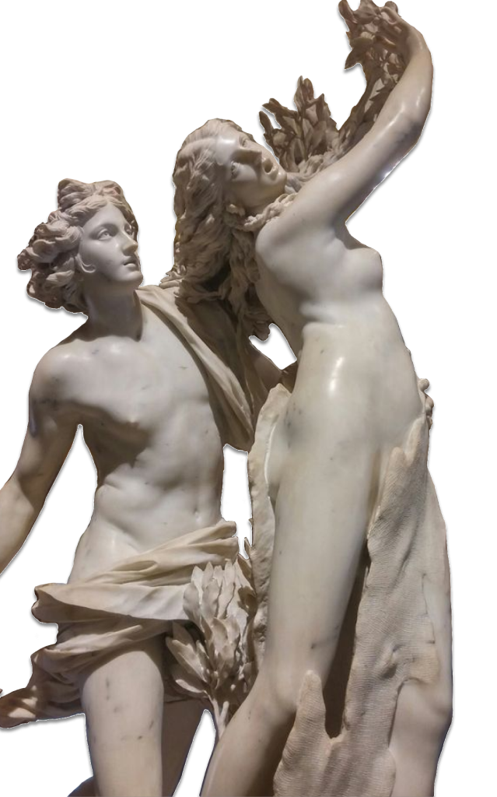
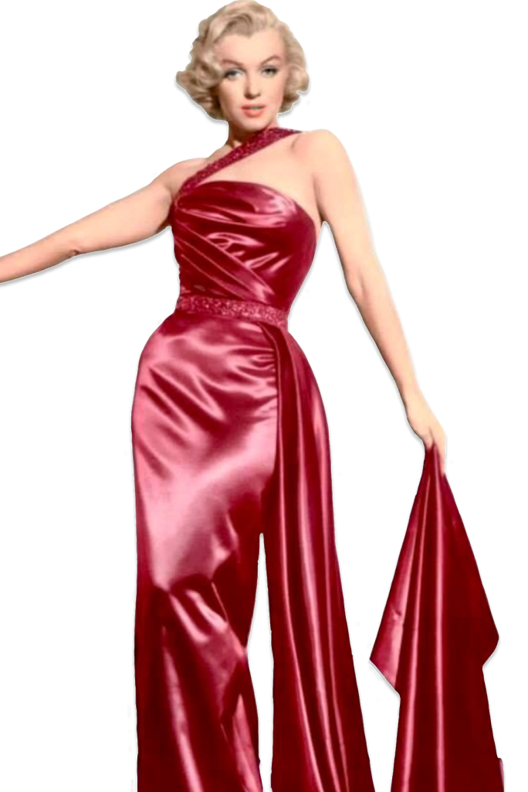

Kraftig øjenmakeup og lys hud, blåsort hår, slank med lille talje blev symboler på status og beskyttelse
Ca. 300-3000 f.kr.
Oldtidens Egypter

Naturlig skønhed, atletisk kropsbygning og symmetri blev idealiseret.
Lys hud blev betragtet som et tegn på adel.
Ca. 800 f.kr.-476 e.kr.
Antikkens Grækenland og Rom

Kurvede kropstyper, som Marilyn Monroe, blev symbolet på skønhed.
En timeglas figur med former blev anset som ideal.